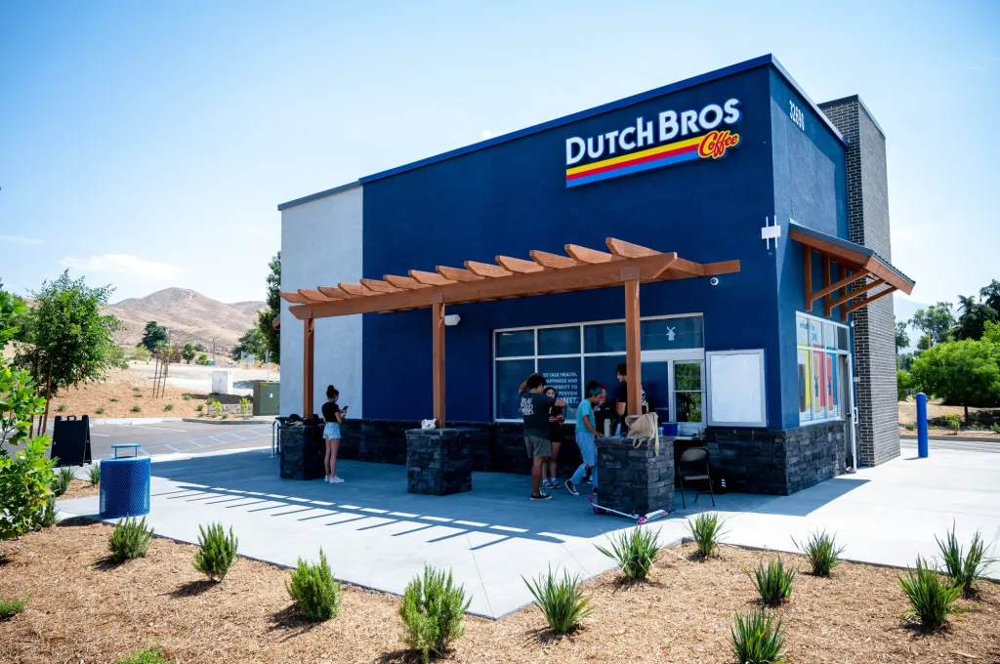

Dutch Bros: More Than Just Coffee (And Prices Too!)
Dutch Bros isn’t your typical coffee shop. It’s a drive-thru delight that transforms your daily caffeine routine into a fun and interactive experience. With a menu that rivals even the most elaborate coffeehouses, it can be a bit overwhelming to choose just one drink. But don’t fret—we’re here to guide you through Dutch Bros’ extensive offerings and give you the lowdown on what to expect in terms of pricing on this page.
A World of Caffeine (and More)
Dutch Bros is a haven for those who crave variety in their beverages. Whether you’re a coffee traditionalist, an energy drink enthusiast, or someone who prefers fruity or creamy delights, there’s something on the menu for everyone. Here’s a deeper dive into their offerings.
Coffee Classics: The OG's
- Brewed Coffee: This straightforward cup of coffee is ideal for those who prefer simplicity. You can enjoy it black or with your choice of milk and sugar.
- Lattes: Lattes are all about smooth, creamy goodness. You can opt for classic flavors like vanilla or caramel, or try one of Dutch Bros’ unique creations like the White Zombie or the Breve.
- Cappuccinos: With a perfect balance of espresso, steamed milk, and foam, cappuccinos are a delightful way to start your day. They also offer flavored options to add a twist to your morning routine.
- Americano: For those who like their coffee strong and bold, the Americano delivers a rich, robust flavor that’s sure to awaken your senses.
- Mocha: Combining the richness of chocolate with the kick of coffee, the Mocha is a decadent treat that’s perfect for those who love a sweet and satisfying drink.
Energy Drinks: Power Up!
- Rebel: Dutch Bros’ signature energy drink comes in a dazzling array of flavors. It’s customizable with various fruit purees and can be tailored to your taste preferences.
- Nitro Cold Brew: Infused with nitrogen for a smooth, creamy texture, this cold brew is not just refreshing but also packed with caffeine to keep you energized.
- Sparkling Energy: This fizzy option adds a fun twist to your energy drink experience. It’s perfect for those who enjoy a bit of sparkle with their caffeine boost.
Freezes and Smoothies: Chill Out
- Freezes: These blended drinks are a crowd-pleaser, offering a cool and refreshing break from the heat. Flavors range from fruity to creamy, ensuring there’s something for everyone.
- Smoothies: Packed with real fruit, Dutch Bros’ smoothies are a healthier option that doesn’t compromise on flavor. They offer a range of fruity blends that are both satisfying and nutritious.
Other Drinks: Something Different
- Iced Tea: A refreshing classic that’s perfect for a hot day. You can choose from traditional black tea or try one of their flavored varieties.
- Lemonade: This tangy and sweet drink is a great way to quench your thirst and cool down on a scorching day.
- Chai Latte: For a spiced twist, the Chai Latte combines aromatic spices with a creamy base, offering a comforting alternative to traditional coffee drinks.
- Hot Cocoa: A rich and velvety hot chocolate that’s perfect for cozy moments or when you need a sweet pick-me-up.
Prices: It’s All About the Flavor
Dutch Bros offers a range of customization options that can impact the final price of your drink. Typically, a basic brewed coffee starts around $3. More elaborate concoctions, such as their signature freezes or energy drinks with multiple add-ins, can cost $6 or more. Despite the potential for sticker shock, it’s worth noting that you’re paying for premium ingredients, creative flavors, and a unique coffeehouse experience that stands out from the crowd.
Tips for Ordering
- Be Clear About Your Order: The extensive menu can be overwhelming. Knowing what you want before you reach the window will make the ordering process smoother.
- Don’t Be Afraid to Ask Questions: The friendly baristas are there to help. If you’re unsure about what to order or need recommendations, just ask!
- Try Something New: Dutch Bros encourages experimentation with flavors. Stepping out of your comfort zone might lead to discovering a new favorite drink.
- Join the Rewards Program: Dutch Bros’ rewards program offers points for every purchase. Sign up to earn rewards and enjoy perks like free drinks.